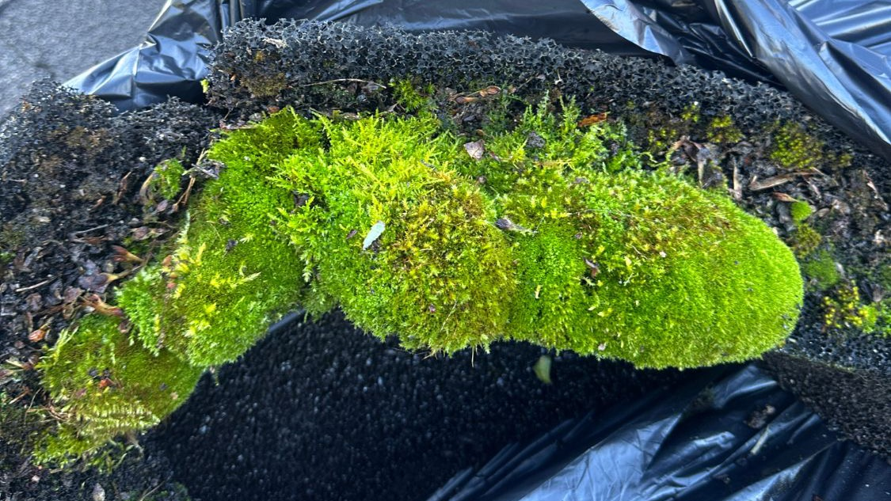

Quick answer
Moss doesn't wash off a roof like dirt does. It has to be lifted by hand and the growth underneath treated so it doesn't come straight back, all without scraping off the granules that protect your shingles. A homeowner with a low single-storey roof can sometimes handle small patches. Anything steeper or higher is where people get hurt, and where roofs get damaged. Whatever you do, don't pressure wash it.
Most people notice moss the same way. They pull into the driveway one day and the roof looks like it's growing a lawn. Then comes the second thought: how hard can it be to get that off? Harder than it looks, as it turns out, and the way you go about it matters more than the effort you put in. Here's why it's worth dealing with, what a DIY attempt involves, and how the method changes depending on what's on your roof.
Why Moss Is Worth Removing
Moss is a sponge. It soaks up rain and dew and keeps the shingles underneath wet for days after everything else has dried. That constant moisture speeds up the loss of the granules that shield asphalt from UV, which is the same damage the algae streaking does, only faster.
Then there's the lifting. As clumps grow, they work into the gaps and push up the edges of the shingle tabs, which gives wind-driven rain a way underneath. Halifax winters make it worse. Water trapped inside moss freezes, expands, and pushes on the shingle a little more every time it cycles through. Whatever falls off ends up in your gutters too, so a mossy roof tends to mean clogged gutters. (If that sounds familiar, we wrote about how often gutters need cleaning.)
A roof replacement runs into the thousands. Cleaning off the moss every couple of years is one of the cheaper ways to push that day back.
Brown Moss Isn't Dead Moss
Look at the roof at the top of this page. Half of that moss is rusty orange. Dry moss goes brown, and it usually isn't dead. It's waiting for the next soaking rain, and when that comes it goes green again within a day or so. If your roof looks brown and dry in August and you've decided to let it be, it will be back in full colour by October.
What DIY Moss Removal Usually Looks Like
If you search for how to do this yourself, you'll find the same handful of methods. None of them are great.
- Scraping or scrubbing with a stiff brush. It lifts the moss, but it lifts granules with it, and on an older roof the shingles can be brittle enough to crack. The roots stay behind, so it grows back.
- Pressure washing. It takes the granules off faster than it takes the moss off, it can drive water up under the shingles, and it can void a manufacturer's warranty. We never use it on shingles.
- Bleach or a store-bought moss killer. It can kill the moss, but everything that runs off the roof lands on the plants, lawn and walkways below, and it can discolour gutters and flashing along the way.
- Zinc or copper strips. These do help, but only as prevention. Rain washes metal ions down the roof and slows regrowth below the strip. They won't remove the moss that's already there.
That last one is genuinely worth considering after a cleaning, though someone still has to get up there to install it.

A mat of moss lifted off a roof and bagged. Growth this thick comes off by hand before any treatment.
The Real Risks of Cleaning Your Own Roof
The risk most people underestimate is the fall. Wet moss is slippery underfoot, and a roof with a decent pitch doesn't give you much room to correct a bad step. A ladder leaned against the gutter can slip or dent the gutter, and then you still have to get from the ladder onto the roof.
The roof itself takes a beating too. Walking on shingles scuffs the granules, and in cold weather the shingles are stiffer and easier to crack. Add a pressure washer or a scraper and it's easy to take years off the roof in an afternoon. Then there's the leftover problem: if the roots aren't dealt with, the moss is back within a season, and you've taken on all that risk for a short-lived result.
How We Handle It Without the Risk
Our roof cleaning service is built around avoiding every one of those problems. It's low-pressure only, with no pressure wand anywhere near your shingles. Heavy moss is lifted off by hand first, carefully, so the granules stay where they belong. Then we apply a treatment that kills what's left at the source, and the remaining growth rinses away on its own over the following weeks.
Before we start, we pre-rinse and protect the landscaping below the roofline. We check your gutters while we're up there. Steeper pitches and complicated rooflines take more safety equipment and more time, and that goes into how we quote them. And we're fully insured, which matters more than most people realize when someone is working on your roof.
Clearing loose moss from an asphalt shingle roof before treatment.
Moss Removal by Roof Type
The method changes with what you've got on top of your house. Most roofs in the HRM are one of these.
| Roof type | How we approach moss |
|---|---|
| Asphalt shingles | Heavy moss lifted by hand, then a low-pressure treatment. The goal is keeping the granules on the roof. |
| Architectural (laminated) shingles | Same approach. The thicker, textured profile gives moss more places to hold on, so treatment strength and dwell time are adjusted. |
| Cedar shakes | Gentler on every step. Cedar is soft, and scrubbing or pressure damages the surface and can dislodge shakes. |
| Metal, slate or tile | Less common here and handled differently. Call or send a photo and we'll tell you honestly whether we're the right fit. |
Not sure which one you have? That's an easy question to answer from a photo. Send us one and we'll tell you.
DIY vs. Hiring a Pro at a Glance
| DIY | WashCrafters | |
|---|---|---|
| Up-front cost | Supplies and your weekend | $279–$999, plus $150–$350 for heavy moss |
| Risk of a fall | Yours | Ours, and steeper roofs get more safety equipment |
| Risk to shingles | Real, especially with scraping or a pressure washer | Low-pressure only |
| Treats what's left behind | Often not | Yes |
| Protects landscaping | Up to you | Pre-rinse and protection included |
| If something goes wrong | Your problem | We're fully insured |
How Much Does Professional Moss Removal Cost?
Roof Soft Wash
$279 – $999
Most Halifax two-storey roofs land around $450–$699
- Small roof (up to 1,500 sq ft): $279–$449
- Medium roof (1,500–2,500 sq ft): $450–$699
- Large roof (2,500–3,500 sq ft): $700–$999
- Extra-large or complex roof (3,500+ sq ft): $1,000+, custom quote
Those prices cover the standard low-pressure treatment. Heavy moss that has to be removed by hand first adds $150–$350 depending on how much of the roof is affected. Our full roof cleaning cost breakdown goes through it size by size.
Will it come back?
Eventually, yes. Moss spores are always landing on roofs in the HRM. Most homes go 2 to 3 years between cleanings, though shaded or north-facing roofs can need it sooner. Trimming back overhanging branches so the roof gets more sun is the cheapest thing you can do to stretch that out.
If you're unsure whether what's on your roof is moss, algae, or both, our identification guide covers how to tell them apart. Or just send us a photo and ask.
Frequently Asked Questions
Does moss damage a roof?
Yes, over time. Moss soaks up water and holds it against the shingles long after the rain stops, and as the clumps grow they can lift the edges of shingle tabs and let water get underneath. In winter, the water trapped in the moss freezes and expands. The result is faster granule loss and a shorter life for the roof.
Can I remove moss from my roof myself?
Small patches on a low, single-storey roof you can reach safely are the only case where DIY makes sense. Anything steeper or higher puts you at real risk of a fall, and scraping, scrubbing or pressure washing can strip the granules that protect your shingles. Moss that's been scraped off without treating what's left usually grows back.
Can I pressure wash moss off my roof?
No. A pressure washer strips the protective granules off asphalt shingles, can force water up under them, and can crack or dislodge cedar shakes and tile. It can also void a manufacturer's warranty. Professional roof cleaning uses a low-pressure application instead.
Does brown moss mean it's dead?
Usually not. Moss turns rusty brown or orange when it dries out and greens back up after the next good soaking. If you want to know whether it's actually dead, look at it after a few days of rain.
How much does professional moss removal cost in Halifax?
A standard low-pressure roof soft wash runs $279 to $999 depending on roof size, with most two-storey roofs landing around $450 to $699. Heavy moss that has to be removed by hand before treatment adds $150 to $350, depending on how much of the roof is affected.
Will the moss grow back after it's removed?
Eventually, yes, since moss spores are always landing on roofs in the HRM. Most homes go 2 to 3 years before it becomes noticeable again, and shaded or north-facing roofs can need attention sooner. Trimming back overhanging branches so the roof gets more sun helps it stay clean longer.

Kendall Scott
Owner/Operator, WashCrafters Exterior Home Solutions Inc., based in Bedford, NS. Fully insured, 5.0 stars on Google, and a soft-wash specialist across the HRM.